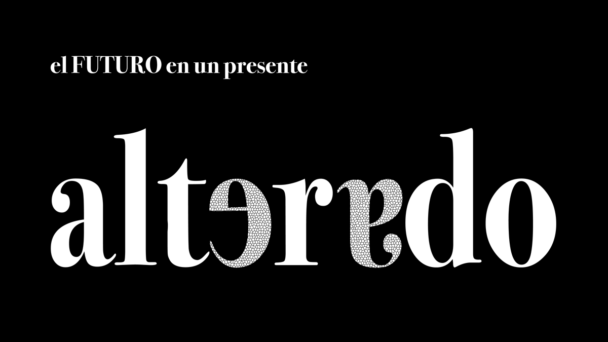
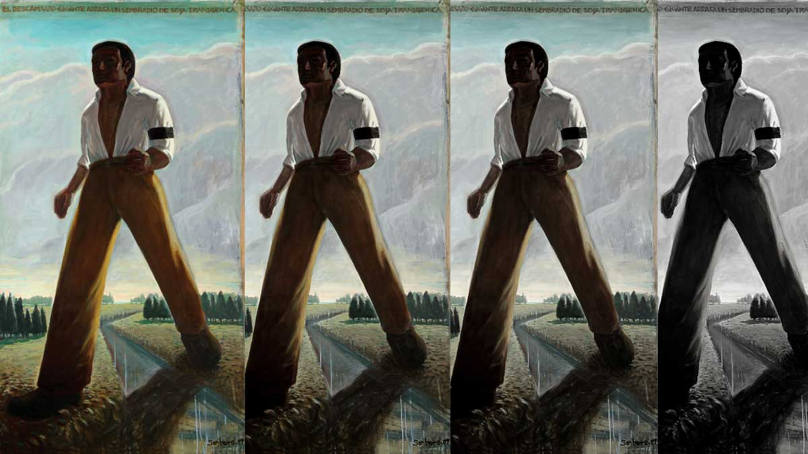
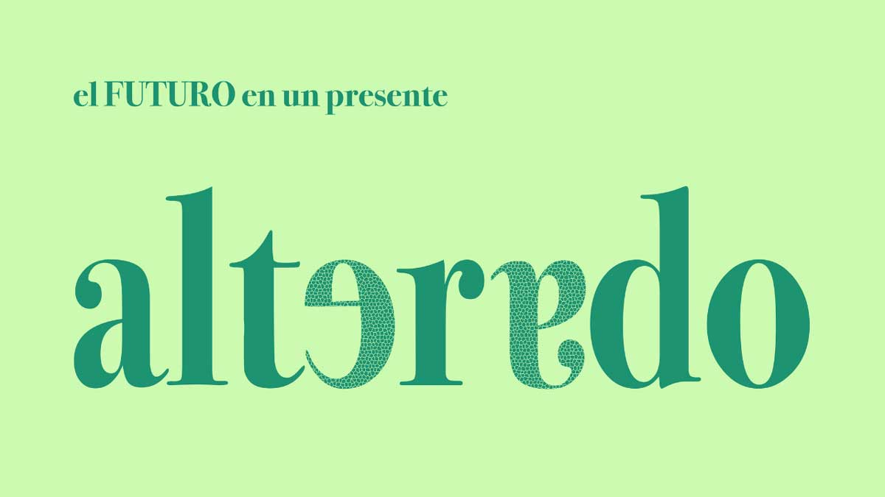
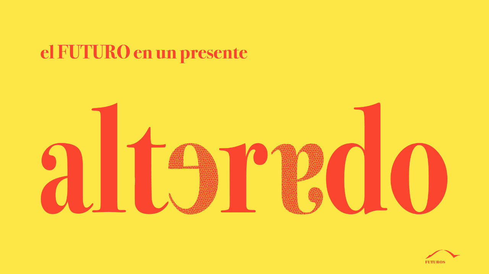
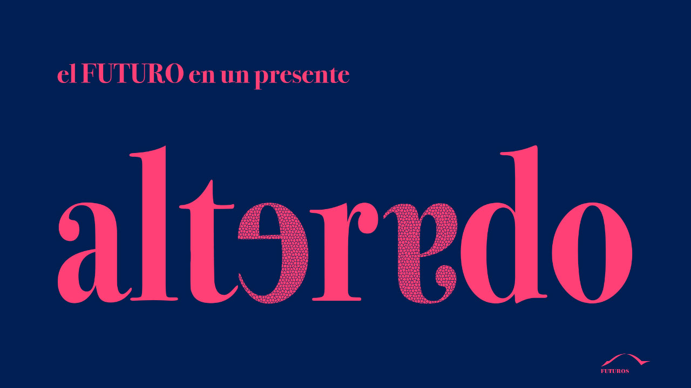

Desde el Programa Futuros generamos contenidos en los que nos preguntamos sobre el futuro, durante este período lo hacemos desde un presente alterado.

PROGRAMA FUTUROS
Desde el Programa Futuros generamos contenidos en los que nos preguntamos sobre el futuro, durante este período lo hacemos desde un presente alterado.
Desde el Programa Futuros generamos contenidos en los que nos preguntamos sobre el futuro, durante este período lo hacemos desde un presente alterado.
Lxs autorxs del libro El futuro: miradas desde las Humanidades reflexionan sobre cómo pensar el futuro en la situación de pandemia del COVID-19.
Encuentros entre colegas para discutir sobre el futuro en un presente alterado.

Fernando Calderón reflexiona sobre el futuro en un presente alterado. Conversación con Andrés Kozel
Ver video
Alejandro Grimson reflexiona sobre el futuro en un presente alterado. Conversación con Andrés Kozel
Ver video
Alejandro Grimson reflexiona sobre el futuro en un presente alterado. Conversación con Andrés Kozel
Ver video
El futuro del Delta del Paraná en un presente alterado. Conversan Rubén Quintana y Claudio Baigún
Ver video
El futuro del arte desde este presente alterado. Conversan Laura Malosetti, Florencia Levy y Gabriel Baggio.
Ver video
Miguel de Asúa conversa con Patricia Kandus sobre la peste negra en relación al Covid-19.
Ver video